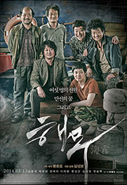

★★★★★ 8.27
2000년에 개봉 한국 영화. 봉준호 감독의 장편 영화 데뷔작이다.
각본, 감독
★★★★★ 9.41
2003년에 개봉한 한국 영화. 봉준호 감독의 두번째 장편 영화로, 이춘재 연쇄살인 사건(개봉 당시 명칭은 화성 연쇄살인 사건)을 모티브로 한 실화극이다.
각본, 감독
★★★★★ 5.49
남극의 도달불능점을 소재로 한, 임필성 감독, 송강호, 유지태 주연의 한국 영화. 음악감독은 카와이 켄지. 2005년 5월에 개봉했다.
각본
★★★★★ 8.62
2006년 개봉한 봉준호 감독의 세번째 장편 영화.
각본, 감독
★★★★★ 7.71
2008년에 개봉한 미셸 공드리 - 레오 까락스 - 봉준호 세 감독의 단편이 담긴 옴니버스 영화.
각본, 감독
★★★★★ 8.62
2009년 개봉한 봉준호 감독의 4번째 장편 영화.
각본, 원안, 감독
★★★★★ 7.98
봉준호 감독의 5번째 장편 영화. 봉준호 감독의 첫 영어 영화다.
각본, 감독

★★★★★ 6.83
‘살인의 추억’의 각본에 참여했던 심성보가 연출을 맡고, 봉준호가 기획, 각본, 제작에 참여한 작품이다. 전작 '살인의 추억' 에서도 좋은 각본과 연출을 보여줬었던 콤비가 다시 재결합하여 영화의 작품성에 큰 기대를 가지게 했다.
각본, 기획, 제작

★★★★★ 8.45
2017년에 개봉한 봉준호 감독의 6번째 장편 영화로, 설국열차 이후 두 번째 영어 영화다.
STORY, 각본, 감독, 제작
★★★★★ 8.48
2019년에 개봉한 봉준호 감독의 7번째 장편 영화. 상류층과 하류층, 두 가족의 만남을 다룬 블랙 코미디 가족 드라마 영화다.
각본, 감독, 작사